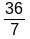

Sachant que 500 = (33 x 15) + 5, répondre à la question sans poser d’opération. Une usine fabrique 500 motos qui seront ensuite transportées par camion, chaque camion transportant 15 motos. Combien de camion faut-il prévoir pour transporter toutes les motos ? Combien de motos contiendra le camion le moins rempli ? ……………………………………………………... |
Encadrer
la fraction par deux nombres entiers consécutifs : …………
<
 |
Calculer le périmètre d’un carré de côté 3,7 cm. P = ………………………………... |
Compléter : 4,328 x 10 = ……………. 35 100 = …………... |